These demonstrations exist to help engineers and security researchers detect, prevent, and remediate unauthenticated CTR mode misuse. Each demonstration executes against a self-contained, in-memory oracle. Every vulnerability is paired directly with its cryptographic mitigation. Do not test these techniques against systems you do not own or are not explicitly authorized to evaluate.
The mechanism
NIST defines Counter mode in SP 800-38A §6.5. A counter generation function produces a sequence of distinct 128-bit blocks T₁, T₂, …, Tₙ (typically constructed as Nonce ∥ Counter). Each counter block is encrypted with the block cipher under key K to produce keystream blocks Sᵢ = E_K(Tᵢ). The ciphertext is produced by XORing plaintext with the keystream: Cᵢ = Pᵢ ⊕ Sᵢ. Decryption performs the exact same operation: Pᵢ = Cᵢ ⊕ Sᵢ.
Unlike ECB or CBC, CTR mode requires no padding: the keystream is truncated to the exact byte length of the plaintext. While this enables high performance, random access, and parallel processing, it inherits the fundamental vulnerabilities of synchronous stream ciphers when used without an authentication tag.
![Comparison of the three counter-mode options on one axis. AES-CTR alone: keystream encryption with nothing authenticating the ciphertext, so it is malleable and a reused nonce cancels the keystream — confidentiality only. AES-CTR plus HMAC-SHA256 over the counter block and ciphertext under a second independent key, verified before decrypting: tampering and truncation are rejected before any plaintext is returned — authentication you compose yourself. AES-GCM: the same counter-mode keystream plus a GHASH tag over ciphertext and associated data as one primitive, rejecting a 1-bit tamper before decryption completes, provided nonces never repeat.](diagrams/modes-ctr-etm-gcm.svg)
What CTR guarantees — and what it does not
The failures below are not evidence that CTR is broken or deprecated. They are what happens when a confidentiality mode is asked to do a job it was never specified for. Three facts from the standards set the boundary:
- CTR is an approved mode. SP 800-38A defines five confidentiality modes — ECB, CBC, CFB, OFB and CTR — and states that, used with a block cipher approved in a FIPS, "these modes can provide cryptographic protection for sensitive, but unclassified, computer data." NIST does not deprecate CTR or advise against it. For contrast, the same document does tell you when to avoid a mode: it says the ECB mode "should not be used" where the confidentiality of data patterns matters. There is no equivalent statement about CTR.
- Its scope is confidentiality, and the malleability is documented. SP 800-38A specifies no integrity mechanism at all. Appendix D states that "for the OFB and CTR modes, the decryption of any ciphertext block is vulnerable to the introduction of specific bit errors into that ciphertext block if its integrity is not protected." That conditional is the whole point: the standard assumes integrity is protected by something else.
- The recommended AEAD is built on CTR. SP 800-38D states that GCM "provides assurance of the confidentiality of data using a variation of the Counter mode of operation for encryption," adding authenticity via a Galois-field hash. Moving to AES-GCM does not move you off CTR — it wraps CTR in the authentication that CTR alone does not provide.
So the rule is not "never use CTR". It is: wherever an attacker can modify the ciphertext, CTR needs an authentication tag computed over that ciphertext — supplied by an AEAD, or by a MAC you compose yourself. The rest of this page shows what the missing tag costs, and then how to add it correctly.
Three root causes, four attack vectors
All CTR mode vulnerabilities trace back to three fundamental root causes:
- Stream-Cipher Malleability: Bitwise XOR has no error diffusion. Modifying ciphertext bit
ialters decrypted plaintext bitiwithout corrupting adjacent bytes. - Keystream Determinism: Under a fixed key, a given counter block
Talways produces the exact same keystream blockS. Reusing a nonce reproduces the keystream. - Absence of Integrity / Authentication: Ciphertexts contain no authentication tag or MAC. Tampered or spliced ciphertexts decrypt cleanly without error.

Vector 1 — Precision bit-flipping / privilege escalation
Because encryption is C = P ⊕ S, decryption calculates P' = C' ⊕ S. If an attacker injects a differential Δ into the ciphertext at offset k (C' = C ⊕ Δ), the server decrypts P' = (C ⊕ Δ) ⊕ S = (P ⊕ S ⊕ Δ) ⊕ S = P ⊕ Δ. An attacker who knows or predicts a target field (such as role=user or transfer_amount=000100) can flip specific bits to forge role=root or transfer_amount=999999. There is zero avalanche effect and zero decryption error (Cryptopals Set 4 Challenge 26).

Precision token bit-flipping playground
The service issues encrypted tokens for user accounts (email=...&uid=1000&role=user). You never see the AES key.
Vector 2 — Keystream reuse / two-time pad & crib-dragging
If two distinct messages are encrypted under the same key and initial counter block: C₁ = P₁ ⊕ S and C₂ = P₂ ⊕ S. XORing both ciphertexts completely removes the keystream: C₁ ⊕ C₂ = (P₁ ⊕ S) ⊕ (P₂ ⊕ S) = P₁ ⊕ P₂. The secret key has zero influence on this result (Cryptopals Set 3 Challenges 19 & 20).
This enables two powerful attacks without ever breaking AES:
- Known-Plaintext Recovery: If any part of
P₁is known (e.g. standard headers, XML/JSON tags, fixed prefixes), the corresponding bytes ofP₂are computed instantly:P₂ = (C₁ ⊕ C₂) ⊕ P₁. - Statistical Crib-Dragging: An attacker guesses common words ("the", "TRANSFER", "HTTP/1.1") and drags them across
C₁ ⊕ C₂. When readable natural language appears, both plaintexts are simultaneously revealed.

Two-time pad keystream cancellation & crib dragging
Vector 3 — Random-access read/write keystream extraction
Many systems expose seekable or editable encrypted stores (such as disk image storage, encrypted databases, or collaborative document APIs) offering an edit(ciphertext, offset, new_text) endpoint. In unauthenticated CTR mode, an attacker calls that endpoint asking for the stored content to be replaced with all-zero plaintext. The server decrypts, overwrites the plaintext with zeros, and re-encrypts under the same key and counter — so the ciphertext it hands back is 0x00 ⊕ S = S, the raw keystream itself. XORing this extracted keystream with the original ciphertext instantly recovers 100% of the secret plaintext in a single request (Cryptopals Set 4 Challenge 25).

Document editor keystream extraction oracle
Extracted Raw Keystream (hex): [Awaiting extraction]
Recovered Plaintext: [Awaiting extraction]
Vector 4 — Counter rollover & keystream collisions
In CTR mode, the counter block is divided into a fixed Nonce and an integer counter field of length L bits. When encrypting long data streams or high-volume network packets without rekeying, the counter reaches 2ᴸ − 1 and rolls over modulo 2ᴸ. This causes the block cipher to encrypt previously used counter blocks, generating duplicate keystreams within the exact same session or connection. NIST SP 800-38A §6.5 requires the counter blocks to be distinct not merely within one message but "across all of the messages that are encrypted under the given key".
The simulator below wraps a deliberately tiny counter field in software so the collision is visible within a handful of blocks. What it proves is the underlying invariant — an identical counter block under an identical key always regenerates an identical keystream block — not that AES itself overflowed a counter. Real deployments meet this limit through field sizing: RFC 3686 §4 gives the block counter 32 bits, capping one packet at 232 − 1 blocks (68,719,476,720 octets) before the counter would repeat under the same key.

Counter rollover & collision simulator
Three quieter failures the missing tag allows
Bit-flipping and keystream reuse are the headline attacks. An unauthenticated stream also fails in three less obvious ways, two of which a tag over the ciphertext closes and one of which it does not:
- Truncation. CTR needs no padding, so a shortened ciphertext is still a well-formed ciphertext. Chopping trailing bytes yields a clean, shorter plaintext with no block-alignment or padding error to notice —
{"user":"alice","admin":false}becomes{"user":"alice", and a lenient parser may accept what is left. - Splicing. Two messages encrypted under the same key and initial counter share a keystream position for position, so a block from one decrypts correctly in the other. An attacker who knows the counter layout can move or graft blocks between messages without touching the key.
- Replay. A recorded ciphertext, resent later, decrypts correctly — and this one survives authentication. A MAC or AEAD tag proves a message is authentic, not that it is fresh.
Truncation and splicing are both closed by a tag computed over the whole ciphertext, which is what Option B's third rule is for. Replay needs separate handling, and NIST says so directly for GCM: SP 800-38D Appendix D notes that GCM "does not inherently prevent an adversary from intercepting the output of an invocation of authenticated encryption and 'replaying' it," and offers two remedies — monitor for duplicate IVs presented for decryption, or bind "a sequential message number or a time stamp" into the associated data so a stale message fails on inspection after the tag verifies.
Detecting unauthenticated CTR
Detecting CTR vulnerabilities requires both passive/black-box testing and static code analysis:
- Black-box (Malleability & Nonce Reuse Testing):
- Test for malleability: flip a single non-essential bit in ciphertext (e.g. whitespace or timestamp byte) and observe if the server accepts it without raising an authentication error.
- Test for nonce reuse: send two identical plaintext payloads. If the returned ciphertexts are byte-identical across separate requests, the system is reusing nonces.
Both tests confirm a weakness when they fire, but neither clears a system when they do not. Identical-plaintext probing misses a service that reuses a nonce across different plaintexts, and a server that rejects a flipped bit may be failing a parser or schema check rather than verifying a MAC. Treat a negative result as inconclusive and confirm in source.
- White-box (Source Code Review):
- Grep for raw CTR modes:
MODE_CTR,modes.CTR(,/CTR/, orAES/CTR/NoPadding. - Check whether decryption verifies a MAC: if
cipher.decrypt()is called without a preceding constant-time HMAC check or AEAD tag verification, the implementation is vulnerable. - Inspect counter initialization: look for hardcoded IVs/nonces (e.g.
iv = b'\x00' * 16), missing IV increments, or static counter prefixes.
- Grep for raw CTR modes:
The fix — authenticate the ciphertext
Two correct options. Both keep counter-mode keystream encryption; they differ only in whether the authentication arrives packaged or composed. Prefer the first unless something forces your hand.
Option A — use an AEAD
AES-GCM (SP 800-38D) and ChaCha20-Poly1305 (RFC 8439) provide confidentiality and integrity as a single primitive, and verify the tag before releasing any plaintext. Under GCM you are still running counter-mode encryption — the tag is what is new. Associated data (aad) is authenticated but not encrypted, which is where a message number, version tag, or recipient identifier belongs.
// AES-GCM. The 96-bit nonce MUST be unique per key — never reuse one.
async function seal(keyBytes, plaintext, aad) {
const key = await crypto.subtle.importKey("raw", keyBytes, "AES-GCM", false, ["encrypt"]);
const nonce = crypto.getRandomValues(new Uint8Array(12));
const ciphertext = new Uint8Array(await crypto.subtle.encrypt(
{ name: "AES-GCM", iv: nonce, additionalData: aad }, key, plaintext));
return { nonce, ciphertext }; // ciphertext already carries the 128-bit tag
}
async function unseal(keyBytes, nonce, ciphertext, aad) {
const key = await crypto.subtle.importKey("raw", keyBytes, "AES-GCM", false, ["decrypt"]);
// Throws if the tag fails. No plaintext is returned on failure — that is the point.
return new Uint8Array(await crypto.subtle.decrypt(
{ name: "AES-GCM", iv: nonce, additionalData: aad }, key, ciphertext));
}Option B — keep AES-CTR and add HMAC (Encrypt-then-MAC)
When CTR is fixed by an existing wire format, hardware, or protocol, compose it with a MAC rather than replacing it. Use this specific ordering: Bellare and Namprempre's analysis of generic composition evaluates Encrypt-and-MAC, MAC-then-Encrypt and Encrypt-then-MAC, and concludes that Encrypt-then-MAC "is secure from all points of view, making it a good choice for a standard" — given an IND-CPA encryption scheme and a strongly unforgeable MAC. HMAC-SHA256 (FIPS 198-1) qualifies.
Three details carry the security, and each is a routine way to get this wrong:
- Use two independent keys. The composition result assumes the encryption and MAC keys "are independently chosen". Derive both from one master secret with an approved KDF; never use a single key for both operations.
- Authenticate the counter block as well as the ciphertext. A tag over the ciphertext alone leaves the counter block attacker-controlled, which lets it be swapped to replay an old keystream against new ciphertext.
- Verify before decrypting. Encrypt-then-MAC is defined as verifying the tag first and decrypting only on success. Compare with a constant-time primitive —
crypto.subtle.verifyhere,hmac.compare_digestin Python,hmac.Equalin Go — never==on the raw tag bytes.
// AES-CTR + HMAC-SHA256, Encrypt-then-MAC. encKey and macKey are INDEPENDENT.
async function sealEtM(encKey, macKey, plaintext) {
const counter = crypto.getRandomValues(new Uint8Array(16));
counter.fill(0, 12); // 96-bit random nonce ‖ 32-bit counter
// 96 bits keeps random-nonce collision below 2^-32 out to ~2^32 messages, the
// same margin as Option A. The 32-bit counter caps one message at 2^32 blocks.
const k = await crypto.subtle.importKey("raw", encKey, "AES-CTR", false, ["encrypt"]);
const ciphertext = new Uint8Array(await crypto.subtle.encrypt(
{ name: "AES-CTR", counter, length: 32 }, k, plaintext));
const mk = await crypto.subtle.importKey(
"raw", macKey, { name: "HMAC", hash: "SHA-256" }, false, ["sign"]);
// The tag covers the counter block AND the ciphertext.
const tag = new Uint8Array(
await crypto.subtle.sign("HMAC", mk, concat(counter, ciphertext)));
return concat(counter, ciphertext, tag);
}
async function openEtM(encKey, macKey, payload) {
if (payload.length < 16 + 32) throw new Error("payload too short");
const counter = payload.slice(0, 16);
const ciphertext = payload.slice(16, payload.length - 32);
const tag = payload.slice(payload.length - 32);
const mk = await crypto.subtle.importKey(
"raw", macKey, { name: "HMAC", hash: "SHA-256" }, false, ["verify"]);
// Verify FIRST. Never decrypt input whose tag has not been checked.
if (!await crypto.subtle.verify("HMAC", mk, tag, concat(counter, ciphertext))) {
throw new Error("authentication failed");
}
const k = await crypto.subtle.importKey("raw", encKey, "AES-CTR", false, ["decrypt"]);
return new Uint8Array(await crypto.subtle.decrypt(
{ name: "AES-CTR", counter, length: 32 }, k, ciphertext));
}Both snippets use the same Web Crypto calls the demonstration below runs and test/attacks.test.mjs exercises, with one deliberate difference: the samples show the counter split to use in production — a 96-bit nonce plus a 32-bit counter, the shape RFC 3686 uses — whereas the in-page demonstrations use the repository's simpler 64/64 helper, which is immaterial there because every demo run generates a fresh key. concat is a byte-array join; the repository's version is in docs/js/crypto.mjs.
The same forgery against all three options
One account, one target field, one XOR delta. The attacker does the identical thing in each case — flipping role=user to role=root in the ciphertext. Only what authenticates the ciphertext changes.
Real-world evidence
| Case / Vulnerability | What happened | Vector |
|---|---|---|
| KRACK, 2017 (CVE-2017-13077) | A flaw in the WPA2 four-way handshake let an attacker within radio range force a client to reinstall an in-use session key, resetting the packet number so that an already-used nonce was repeated. The resulting keystream reuse allowed replay, decryption, and frame forgery against CCMP and GCMP (Vanhoef & Piessens, ACM CCS 2017). Note this is a forced nonce reset, not counter exhaustion. | Vector 2 |
| Microsoft Word & Excel RC4, 2005 (no CVE assigned) | Word and Excel encrypted documents with RC4 — a stream cipher rather than a counter mode, but subject to the identical keystream-reuse failure. Re-saving an edited document reused the same key and salt, so two revisions were encrypted under one keystream; XORing the ciphertexts cancelled it and leaked the plaintexts (Hongjun Wu, IACR ePrint 2005/007). | Vector 2 |
| Shadowsocks stream ciphers, 2020 (no CVE assigned) | Unauthenticated stream ciphers (AES-CTR, ChaCha20) let an active attacker bit-flip the target address inside a recorded proxy header and replay it, turning the Shadowsocks server into a decryption oracle that delivered plaintext to an attacker-controlled host (Zhiniang Peng, Qihoo 360 Core Security, February 2020). AEAD ciphers were specified in SIP004 (2017, amended by SIP007), and the project now directs users to AEAD rather than stream ciphers. | Vector 1 |
| MEGA, 2022 (no CVE assigned) | A boundary case worth reading closely: MEGA did authenticate its file chunks, encrypting them with a custom AES-CCM construction (AES-CTR for confidentiality plus a CBC-MAC tag). The unprotected part was the key hierarchy — per-file node keys were wrapped with AES-ECB under the master key with no integrity protection, so a malicious server (MEGA itself, or anyone who compromised its infrastructure) could manipulate those key blocks to mount plaintext-recovery and file-framing attacks (Backendal, Haller & Paterson, IACR ePrint 2022/959; IEEE S&P 2023). Authenticating the message is not enough if the key material is malleable. | Root cause 3, applied to key material rather than the stream — not Vector 1 |
Operating limits: nonces, counters, tags, and rekeying
Authentication closes the malleability gap. It does not remove the nonce and counter discipline that CTR and GCM both depend on — and GCM's failure under nonce reuse is more severe than CTR's, not less.
Nonce uniqueness
Reusing a (Key, Nonce) pair in GCM destroys confidentiality exactly as it does in raw CTR, and additionally allows recovery of the GHASH authentication key, enabling arbitrary forgery (Böck et al., USENIX WOOT 2016). SP 800-38D §8 states the requirement probabilistically: the chance that the authenticated encryption function is ever invoked with the same IV and the same key on two or more distinct input sets "shall be no greater than 2-32". For nonces produced by the RBG-based construction (§8.2.2), §8.3 caps the total number of encryptions under any one key at 232 — that cap, together with a nonce of at least 96 bits, is what makes §8's bound hold.
Tag length
SP 800-38D §5.2.1.2 permits exactly seven tag lengths: 128, 120, 112, 104 or 96 bits generally, plus 64 and 32 bits only "for certain applications" under Appendix C's constraints. "An implementation shall not support values for t that are different from the seven choices", and "a single, fixed value for t … shall be associated with each key" — the tag length is a property of the key, not a per-message choice. Truncating the tag is specifically dangerous in GCM: Appendix C warns that absent its guidelines, a targeted forgery attack may be practical enough "to produce the hash subkey, H, after which the authentication assurance is completely lost." Use 128 bits unless a packet budget genuinely forces otherwise, and then read Appendix C first.
GCM's authenticity assurance also has a data bound: SP 800-38D scopes it to the confidential data "up to about 64 gigabytes per invocation".
Counter exhaustion and rekeying
A counter block is a fixed nonce field plus an integer counter field, and the counter field's width caps how much data one key can encrypt before a counter block repeats. RFC 3686 §4 uses a 32-bit block counter, permitting "(232)-1 blocks = 4,294,967,295 blocks = 68,719,476,720 octets" per packet. Widening the nonce shrinks the counter and vice versa; the split is a capacity decision, not a detail. A workable rekeying discipline:
- Fix the split up front from the largest message and the highest message count the key must serve, and record both numbers alongside the format.
- Count invocations per key, not per process. SP 800-38D's 232 ceiling is explicitly "a 'global' requirement" across every instance using that key, so a fleet must divide the budget among its nodes rather than each assuming the whole.
- Rekey on a threshold below the bound, not on reaching it, so that in-flight work cannot cross the limit while the new key propagates.
- Derive the replacement with an approved KDF from a master secret, and reset the counter only after the key has actually changed. Resetting a counter under a key still in use is the same failure as reusing a nonce.
CTR is an approved confidentiality mode that makes no integrity guarantee, and AES-GCM is counter-mode encryption plus a tag — so the rule is not to avoid CTR but to authenticate it. Wherever an attacker can reach the ciphertext, use an AEAD, or compose AES-CTR with HMAC as Encrypt-then-MAC under independent keys, authenticating the counter block with the ciphertext and verifying the tag before decrypting. Then keep the nonce, counter and rekeying discipline that both modes still require.
Primary references
- NIST SP 800-38A — Recommendation for Block Cipher Modes of Operation: Methods and Techniques. §6.5 defines CTR and its counter-uniqueness requirement; the abstract establishes CTR as one of five approved confidentiality modes; Appendix D gives the error properties, including CTR malleability conditioned on integrity not being protected.
- NIST SP 800-38D — Galois/Counter Mode (GCM) and GMAC. §1 describes GCM's confidentiality as a variation of Counter mode; §5.2.1.2 fixes the seven permitted tag lengths; §8 and §8.3 give the IV-uniqueness bound and invocation ceiling; Appendix C covers short tags; Appendix D covers replay.
- RFC 3686 — Using Advanced Encryption Standard (AES) Counter Mode With IPsec Encapsulating Security Payload (ESP).
- RFC 8439 — ChaCha20 and Poly1305 for IETF Protocols.
- Bellare & Namprempre, IACR ePrint 2000/025 — Authenticated Encryption: Relations among Notions and Analysis of the Generic Composition Paradigm (why Encrypt-then-MAC, with independently chosen keys, is the composition to use).
- FIPS 198-1 — The Keyed-Hash Message Authentication Code (HMAC). Still the current standard, though NIST has proposed withdrawing it and moving the content to SP 800-224, which remains in draft. The stated reasons are editorial — the content suits a Special Publication better, and the specification needs updating for SHA-3 block sizes — not a weakness in HMAC.
- Cryptopals Crypto Challenges — Set 3 (Challenges 19 & 20: Break fixed-nonce CTR mode) and Set 4 (Challenges 25 & 26: Random access read/write CTR and CTR bitflipping).
- Vanhoef & Piessens, ACM CCS 2017 — Key Reinstallation Attacks: Forcing Nonce Reuse in WPA2.
- Backendal, Haller & Paterson — MEGA: Malleable Encryption Goes Awry (IACR ePrint 2022/959; IEEE S&P 2023) — malicious-server attacks against MEGA's AES-ECB-wrapped key hierarchy.